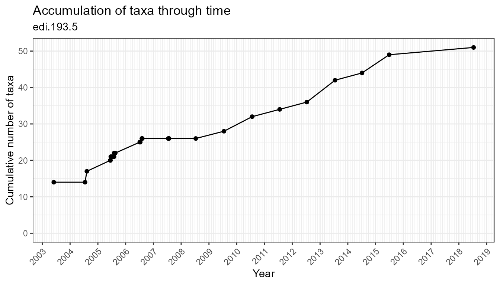
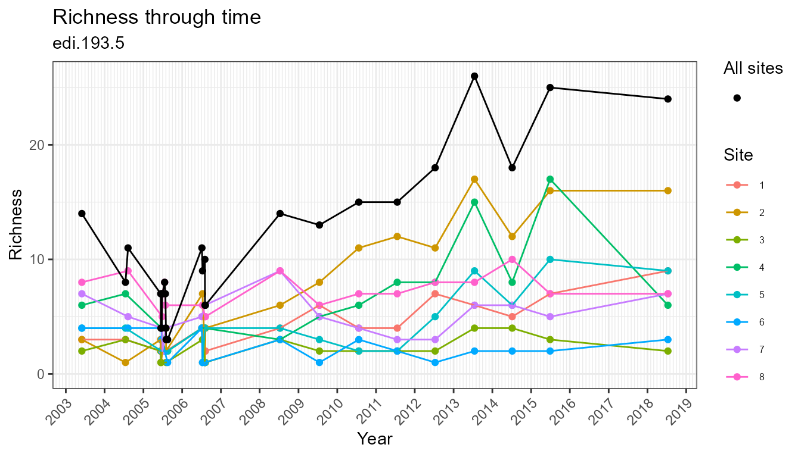
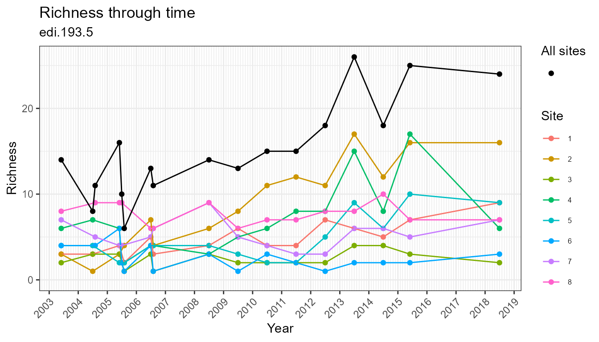
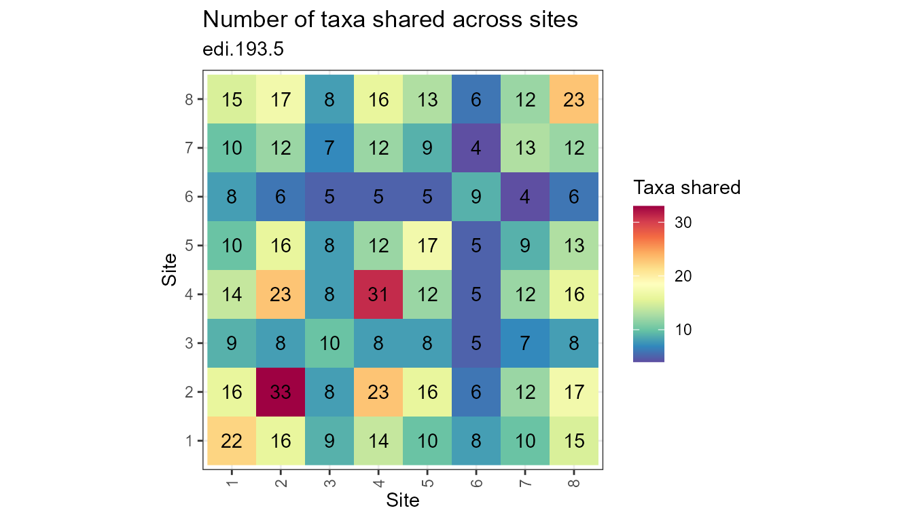
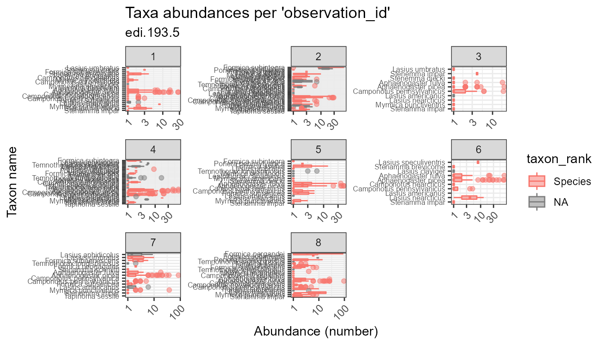
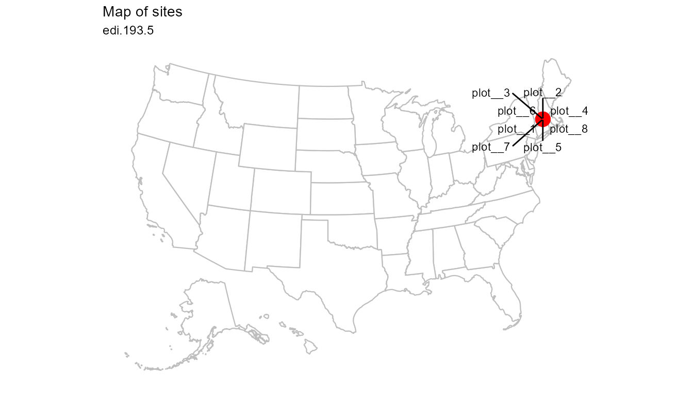

A set of “use” functions help you search, read, manipulate, plot, and save ecocomDP data.
Find data of interest by searching on one or more query parameters.
All available datasets are returned with an empty call to search_data():
search_data()
#> # A tibble: 82 x 11
#> source id title description abstract years sampling_interv~ sites url
#> <chr> <chr> <chr> <chr> <chr> <chr> <chr> <chr> <chr>
#> 1 EDI edi.3~ Fores~ <NA> "This da~ 8 0.01 <NA> https~
#> 2 EDI edi.2~ Zoopl~ <NA> "This da~ 9 0.19 <NA> https~
#> 3 EDI edi.3~ Long ~ <NA> "This da~ 21 0.02 <NA> https~
#> 4 EDI edi.3~ Dune ~ <NA> "This da~ 7 0.15 <NA> https~
#> # ... with 78 more rows, and 2 more variables: source_id <chr>,
#> # source_id_url <chr>The “taxa” parameter enables searching on any taxonomic rank value. Find datasets about insects:
search_data(taxa = "Insecta")
#> # A tibble: 13 x 11
#> source id title description abstract years sampling_interv~ sites url
#> <chr> <chr> <chr> <chr> <chr> <chr> <chr> <chr> <chr>
#> 1 EDI edi.2~ Moss ~ <NA> "This da~ 23 821.61 <NA> https~
#> 2 EDI edi.2~ Bonan~ <NA> "This da~ 38 0.41 <NA> https~
#> 3 EDI edi.3~ Aphid~ <NA> "This da~ 4 0 <NA> https~
#> 4 EDI edi.3~ CGR02~ <NA> "This da~ 30 0.06 <NA> https~
#> # ... with 9 more rows, and 2 more variables: source_id <chr>,
#> # source_id_url <chr>The “num_years” parameter lets you find datasets within a range of sampling years. Datasets with 20 to 40 years of sampling:
search_data(num_years = c(20, 40))
#> # A tibble: 22 x 11
#> source id title description abstract years sampling_interv~ sites url
#> <chr> <chr> <chr> <lgl> <chr> <int> <dbl> <chr> <chr>
#> 1 EDI edi.3~ Long ~ NA "This da~ 21 0.02 <NA> https~
#> 2 EDI edi.2~ Moss ~ NA "This da~ 23 822. <NA> https~
#> 3 EDI edi.3~ Annua~ NA "This da~ 20 0 <NA> https~
#> 4 EDI edi.3~ SGS-L~ NA "This da~ 26 0.05 <NA> https~
#> # ... with 18 more rows, and 2 more variables: source_id <chr>,
#> # source_id_url <chr>The “area” parameter facilitates searches by geographic regions. Datasets originating from the Northeast United States:
search_data(area = c(47, -70, 38, -90))
#> # A tibble: 55 x 11
#> source id title description abstract years sampling_interv~ sites url
#> <chr> <chr> <chr> <chr> <chr> <chr> <chr> <chr> <chr>
#> 1 EDI edi.3~ Fores~ <NA> "This da~ 8 0.01 <NA> https~
#> 2 EDI edi.3~ Long ~ <NA> "This da~ 21 0.02 <NA> https~
#> 3 EDI edi.3~ Dune ~ <NA> "This da~ 7 0.15 <NA> https~
#> 4 EDI edi.3~ SGS-L~ <NA> "This da~ 7 0 <NA> https~
#> # ... with 51 more rows, and 2 more variables: source_id <chr>,
#> # source_id_url <chr>Combine query parameters to narrow results:
search_data(taxa = "Insecta", num_years = c(20, 100), area = c(47, -70, 38, -90))
#> # A tibble: 4 x 11
#> source id title description abstract years sampling_interv~ sites url
#> <chr> <chr> <chr> <lgl> <chr> <int> <dbl> <chr> <chr>
#> 1 EDI edi.3~ CGR02~ NA "This da~ 30 0.06 <NA> https~
#> 2 EDI edi.2~ North~ NA "This da~ 36 10.5 <NA> https~
#> 3 EDI edi.2~ North~ NA "This da~ 35 10.8 <NA> https~
#> 4 EDI edi.2~ North~ NA "This da~ 36 10.5 <NA> https~
#> # ... with 2 more variables: source_id <chr>, source_id_url <chr>Assign results to a variable and learn more:
r <- search_data(taxa = "Insecta", num_years = c(20, 100), area = c(47, -70, 38, -90))
r$title
#> [1] "CGR02 Sweep Sampling of Grasshoppers on Konza Prairie LTER watersheds (Reformatted to ecocomDP Design Pattern)"
#> [2] "North Temperate Lakes LTER: Pelagic Macroinvertebrate Summary 1983 - current (Reformatted to ecocomDP Design Pattern)"
#> [3] "North Temperate Lakes LTER: Benthic Macroinvertebrates 1981 - current (Reformatted to ecocomDP Design Pattern)"
#> [4] "North Temperate Lakes LTER: Pelagic Macroinvertebrate Abundance 1983 - current (Reformatted to ecocomDP Design Pattern)"See ?search_data for additional query parameters.
Read data from host APIs to get the newest authoritative version.
Read from the host API:
dataset_1 <- read_data("edi.193.5")
#> Reading edi.193.5
#> [0%] Downloaded 0 bytes...
#> [0%] Downloaded 0 bytes...
#> [0%] Downloaded 0 bytes...
#> [0%] Downloaded 0 bytes...
#> [0%] Downloaded 0 bytes...
#> [0%] Downloaded 0 bytes...
#> [0%] Downloaded 0 bytes...
#> [0%] Downloaded 0 bytes...
#>
#> Validating edi.193.5:
#> Required tables
#> Column names
#> Required columns
#> Column classes
#> Datetime formats
#> Primary keys
#> Composite keys
#> Referential integrity
#> Latitude and longitude format
#> Latitude and longitude range
#> Elevation
#> variable_mappingRead from the host API with filters when datasets are large (currently only for NEON datasets):
dataset_2 <- read_data(
id = "neon.ecocomdp.20120.001.001",
site = c("COMO", "LECO", "SUGG"),
startdate = "2017-06",
enddate = "2019-09",
check.size = FALSE)
#> Finding available files
#> |==================================================================| 100%
#>
#> Downloading files totaling approximately 1.588594 MB
#> Downloading 20 files
#> |====================================================================| 100%
#>
#> Unpacking zip files using 1 cores.
#> |++++++++++++++++++++++++++++++++++++++++++++++++++| 100% elapsed=00s
#> Stacking operation across a single core.
#> Stacking table inv_fieldData
#> |++++++++++++++++++++++++++++++++++++++++++++++++++| 100% elapsed=00s
#> Stacking table inv_persample
#> |++++++++++++++++++++++++++++++++++++++++++++++++++| 100% elapsed=00s
#> Stacking table inv_pervial
#> |++++++++++++++++++++++++++++++++++++++++++++++++++| 100% elapsed=00s
#> Stacking table inv_taxonomyProcessed
#> |++++++++++++++++++++++++++++++++++++++++++++++++++| 100% elapsed=02s
#> Stacking table inv_taxonomyRaw
#> |++++++++++++++++++++++++++++++++++++++++++++++++++| 100% elapsed=02s
#> Copied the most recent publication of validation file to /stackedFiles
#> Copied the most recent publication of categoricalCodes file to /stackedFiles
#> Copied the most recent publication of variable definition file to /stackedFiles
#> Finished: Stacked 5 data tables and 3 metadata tables!
#> Stacking took 4.732454 secs
#> Joining, by = c("uid", "sampleID")
#> Joining, by = "sampleID"
#>
#> Validating neon.ecocomdp.20120.001.001:
#> Required tables
#> Column names
#> Required columns
#> Column classes
#> Datetime formats
#> Primary keys
#> Composite keys
#> Referential integrity
#> Latitude and longitude format
#> Latitude and longitude range
#> Elevation
#> variable_mappingA data are returned as a list of metadata, tables, and validation issues (if there are any). The dataset identifier is at the top of this list.
str(dataset_1)
#> List of 4
#> $ id : chr "edi.193.5"
#> $ metadata :List of 1
#> ..$ url: chr "https://portal.edirepository.org/nis/mapbrowse?packageid=edi.193.5"
#> $ tables :List of 8
#> ..$ location : tibble [10 × 6] (S3: tbl_df/tbl/data.frame)
#> .. ..$ location_id : chr [1:10] "a1" "a2" "1" "2" ...
#> .. ..$ location_name : chr [1:10] "block__Ridge" "block__Valley" "plot__1" "plot__2" ...
#> .. ..$ latitude : num [1:10] NA NA 42.5 42.5 42.5 ...
#> .. ..$ longitude : num [1:10] NA NA -72.2 -72.2 -72.2 ...
#> .. ..$ elevation : num [1:10] NA NA 220 220 220 220 220 220 220 220
#> .. ..$ parent_location_id: chr [1:10] NA NA "a2" "a2" ...
#> ..$ taxon : tibble [53 × 5] (S3: tbl_df/tbl/data.frame)
#> .. ..$ taxon_id : chr [1:53] "1" "2" "3" "4" ...
#> .. ..$ taxon_rank : chr [1:53] "Species" "Species" "Species" "Species" ...
#> .. ..$ taxon_name : chr [1:53] "Aphaenogaster fulva" "Aphaenogaster picea" "Camponotus chromaiodes" "Camponotus herculeanus" ...
#> .. ..$ authority_system : chr [1:53] "ITIS" "ITIS" "ITIS" "ITIS" ...
#> .. ..$ authority_taxon_id: chr [1:53] "578383" "578440" "575766" "575995" ...
#> ..$ observation : tibble [2,931 × 9] (S3: tbl_df/tbl/data.frame)
#> .. ..$ observation_id: chr [1:2931] "1" "2" "3" "4" ...
#> .. ..$ event_id : chr [1:2931] "1" "1" "1" "1" ...
#> .. ..$ package_id : chr [1:2931] "edi.193.5" "edi.193.5" "edi.193.5" "edi.193.5" ...
#> .. ..$ location_id : chr [1:2931] "4" "4" "4" "4" ...
#> .. ..$ datetime : Date[1:2931], format: "2003-06-01" "2003-06-01" ...
#> .. ..$ taxon_id : chr [1:2931] "1" "2" "53" "2" ...
#> .. ..$ variable_name : chr [1:2931] "abundance" "abundance" "abundance" "abundance" ...
#> .. ..$ value : num [1:2931] 2 2 1 2 1 1 1 1 1 1 ...
#> .. ..$ unit : chr [1:2931] "number" "number" "number" "number" ...
#> ..$ location_ancillary : tibble [8 × 6] (S3: tbl_df/tbl/data.frame)
#> .. ..$ location_ancillary_id: chr [1:8] "1" "2" "3" "4" ...
#> .. ..$ location_id : chr [1:8] "1" "2" "3" "4" ...
#> .. ..$ datetime : Date[1:8], format: NA NA ...
#> .. ..$ variable_name : chr [1:8] "treatment" "treatment" "treatment" "treatment" ...
#> .. ..$ value : chr [1:8] "Girdled" "Logged" "HemlockControl" "Logged" ...
#> .. ..$ unit : chr [1:8] NA NA NA NA ...
#> ..$ taxon_ancillary : tibble [742 × 7] (S3: tbl_df/tbl/data.frame)
#> .. ..$ taxon_ancillary_id: chr [1:742] "1" "2" "3" "4" ...
#> .. ..$ taxon_id : chr [1:742] "1" "1" "1" "1" ...
#> .. ..$ datetime : Date[1:742], format: NA NA ...
#> .. ..$ variable_name : chr [1:742] "subfamily" "hl" "rel" "rll" ...
#> .. ..$ value : chr [1:742] "Myrmicinae" "1.1582" "0.172681748" "1.323778277" ...
#> .. ..$ unit : chr [1:742] NA "millimeter" "millimeter" "millimeter" ...
#> .. ..$ author : chr [1:742] NA NA NA NA ...
#> ..$ observation_ancillary: tibble [8,793 × 5] (S3: tbl_df/tbl/data.frame)
#> .. ..$ observation_ancillary_id: chr [1:8793] "1" "2" "3" "4" ...
#> .. ..$ observation_id : chr [1:8793] "1" "1" "1" "2" ...
#> .. ..$ variable_name : chr [1:8793] "trap.type" "trap.num" "moose.cage" "trap.type" ...
#> .. ..$ value : chr [1:8793] "bait" "1 hour" NA "bait" ...
#> .. ..$ unit : chr [1:8793] NA NA NA NA ...
#> ..$ dataset_summary : tibble [1 × 7] (S3: tbl_df/tbl/data.frame)
#> .. ..$ package_id : chr "edi.193.5"
#> .. ..$ original_package_id : chr "knb-lter-hfr.118.33"
#> .. ..$ length_of_survey_years : num 15
#> .. ..$ number_of_years_sampled : num 13
#> .. ..$ std_dev_interval_betw_years: num 0.67
#> .. ..$ max_num_taxa : num 53
#> .. ..$ geo_extent_bounding_box_m2 : num 913451
#> ..$ variable_mapping : tibble [19 × 6] (S3: tbl_df/tbl/data.frame)
#> .. ..$ variable_mapping_id: chr [1:19] "1" "2" "3" "4" ...
#> .. ..$ table_name : chr [1:19] "observation" "observation_ancillary" "observation_ancillary" "observation_ancillary" ...
#> .. ..$ variable_name : chr [1:19] "abundance" "trap.type" "trap.num" "moose.cage" ...
#> .. ..$ mapped_system : chr [1:19] "Darwin Core" "The Ecosystem Ontology" NA NA ...
#> .. ..$ mapped_id : chr [1:19] "http://rs.tdwg.org/dwc/terms/individualCount" "http://purl.dataone.org/odo/ECSO_00001591" NA NA ...
#> .. ..$ mapped_label : chr [1:19] "individualCount" "type of trap" NA NA ...
#> $ validation_issues: list()Working with a “flattened” dataset simplifies common tasks (select, filter, arrange, group, summarize). A “flat” version is where all tables have been joined and spread wide except for the core observation variables, which remain in long form.
flat <- flatten_data(dataset_1)
flat
#> # A tibble: 2,931 × 46
#> observation_id event_id datetime variable_name value unit trap.type
#> <chr> <chr> <date> <chr> <dbl> <chr> <chr>
#> 1 1 1 2003-06-01 abundance 2 number bait
#> 2 2 1 2003-06-01 abundance 2 number bait
#> 3 3 1 2003-06-01 abundance 1 number bait
#> 4 4 1 2003-06-01 abundance 2 number bait
#> # … with 2,927 more rows, and 39 more variables: trap.num <chr>,
#> # moose.cage <chr>, location_id <chr>, location_name <chr>, block <chr>,
#> # plot <chr>, latitude <dbl>, longitude <dbl>, elevation <dbl>,
#> # treatment <chr>, taxon_id <chr>, taxon_rank <chr>, taxon_name <chr>,
#> # authority_system <chr>, authority_taxon_id <chr>, behavior <chr>,
#> # biogeographic.affinity <chr>, colony.size <chr>, feeding.preference <chr>,
#> # hl <dbl>, unit_hl <chr>, nest.substrate <chr>, primary.habitat <chr>, …Visually explore data with the plotting functions:
plot_taxa_accum_time(flat)
plot_taxa_diversity(flat)
plot_taxa_diversity(flat, time_window_size = "month")
plot_taxa_diversity(flat, time_window_size = "year")
plot_sample_space_time(flat)
plot_taxa_shared_sites(flat)
plot_taxa_rank(flat, facet_var = "location_id")
plot_taxa_occur_freq(
data = flat,
facet_var = "location_id",
color_var = "taxon_rank")
plot_taxa_abund(
data = flat,
facet_var = "location_id",
color_var = "taxon_rank",
trans = "log10")
#> Warning: Removed 78 rows containing non-finite values (stat_boxplot).
plot_sites(flat)
Save local copies and read them back in later.
Save a local copy as .rds:
datasets <- list(dataset_1, dataset_2)
mypath <- paste0(tempdir(), "/data")
dir.create(mypath)
save_data(datasets, mypath)Read a local copy from .rds
datasets <- read_data(from = paste0(mypath, "/datasets.rds"))
#> Validating edi.193.5:
#> Required tables
#> Column names
#> Required columns
#> Column classes
#> Datetime formats
#> Primary keys
#> Composite keys
#> Referential integrity
#> Latitude and longitude format
#> Latitude and longitude range
#> Elevation
#> variable_mapping
#> Validating neon.ecocomdp.20120.001.001:
#> Required tables
#> Column names
#> Required columns
#> Column classes
#> Datetime formats
#> Primary keys
#> Composite keys
#> Referential integrity
#> Latitude and longitude format
#> Latitude and longitude range
#> Elevation
#> variable_mappingSave a local copy as .csv:
save_data(datasets, mypath, type = ".csv")Read a local copy from .csv:
datasets <- read_data(from = mypath)
#> Validating edi.193.5:
#> Required tables
#> Column names
#> Required columns
#> Column classes
#> Datetime formats
#> Primary keys
#> Composite keys
#> Referential integrity
#> Latitude and longitude format
#> Latitude and longitude range
#> Elevation
#> variable_mapping
#> Validating neon.ecocomdp.20120.001.001:
#> Required tables
#> Column names
#> Required columns
#> Column classes
#> Datetime formats
#> Primary keys
#> Composite keys
#> Referential integrity
#> Latitude and longitude format
#> Latitude and longitude range
#> Elevation
#> variable_mapping